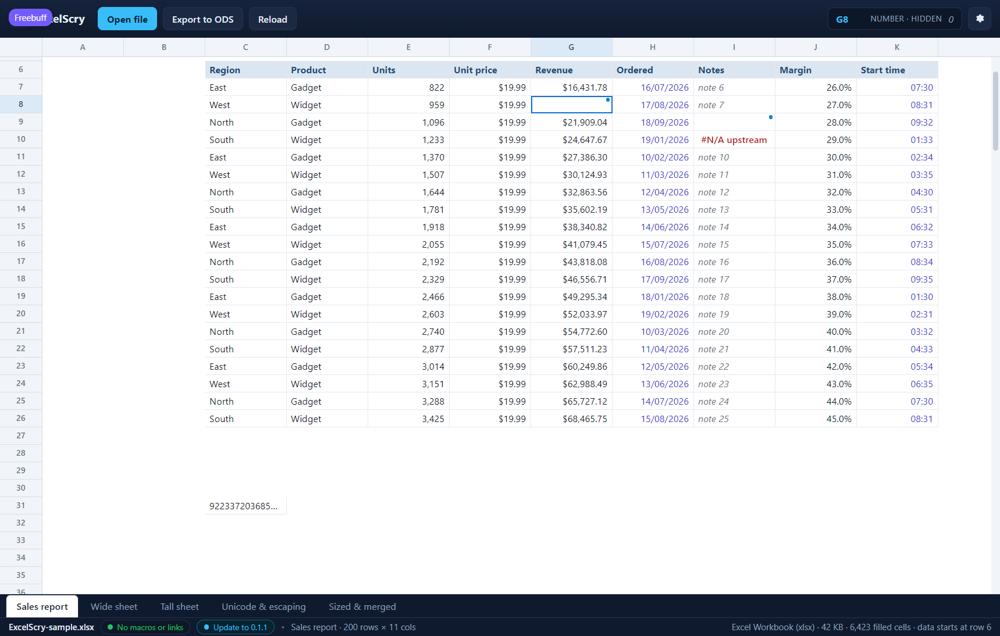

<!doctype html>
<meta charset="utf-8">
<title>ExcelScry — a value its number format hides</title>
<style>
  body { margin: 0; background: #1b1d22; color: #c9cdd6;
         font: 14px/1.5 Segoe UI, system-ui, sans-serif; }
  figure { margin: 0; }
  img { display: block; width: 100%; height: auto; }
  figcaption { padding: 12px 16px; }
  code { color: #8fd3ff; }
</style>
<figure>
  
  <figcaption>
    A cell whose number format shows nothing is still a cell with a value in
    it. <code>G8</code> is a zero under <code>#,##0;-#,##0;</code> — Excel's
    way of hiding zeros — so it is blank here exactly as it is in the sheet
    it came from, but the corner dot and the tooltip say the blank is not
    empty, and the readout names what is behind it: <code>NUMBER · HIDDEN</code>
    with the <code>0</code> in grey. <code>I9</code> is the same mark for a
    hidden text value, under a four-section code whose fourth is empty. A cell
    with nothing in it stays unmarked, and one the format leaves visible keeps
    its ordinary text. (Shown in the UI harness, which serves this front end
    against mocked rows carrying the hidden value as a fourth element beside
    the cell's kind, text and look.)
  </figcaption>
</figure>
